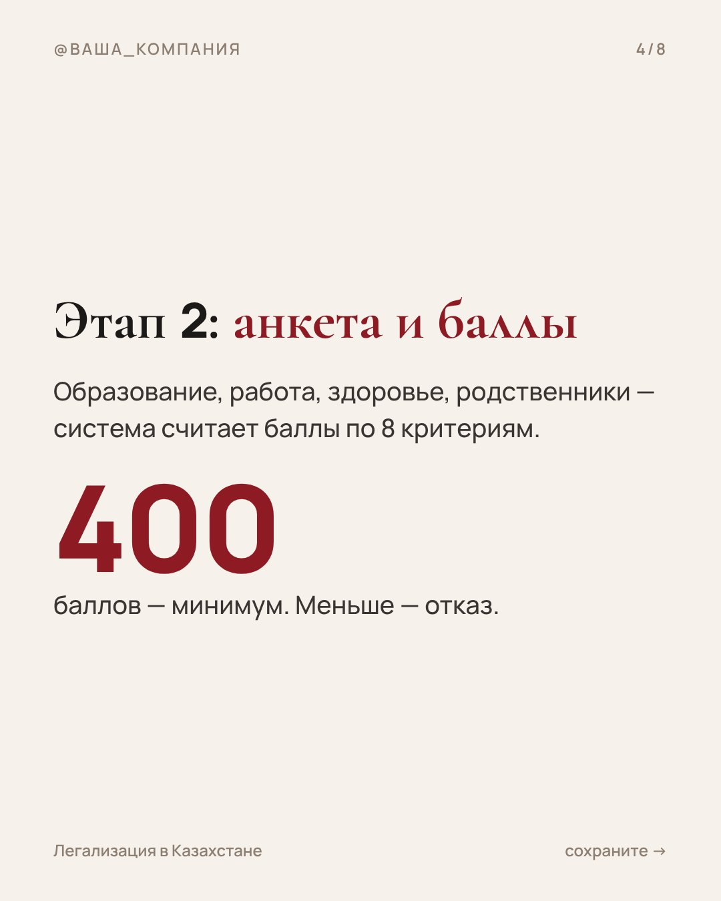
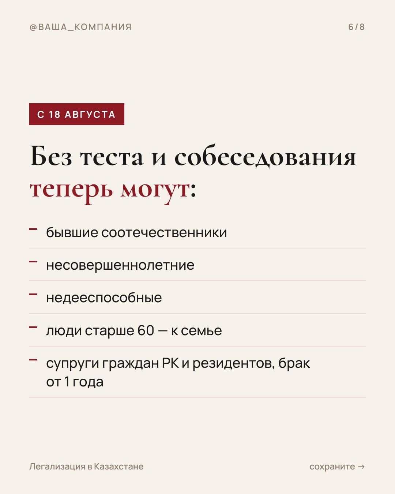

Примеры контента
Как будет выглядеть ваш контент — на основе того, что работает у конкурентов
Новостной повод + конкретные цифры + призыв написать слово. В работе — ваш логотип, ваши съёмки и проверка формулировок вашим юристом.
Контент строится по топ-контенту, а не наугад
До старта я разбираю аккаунты конкурентов: прямую нишу и смежные, где сидит та же аудитория. Беру публикации, которые набрали больше всего просмотров, комментариев и сохранений, и смотрю, какие темы, заходы и форматы на них сработали. Ваш контент собирается по этим же схемам, но с вашими услугами, цифрами и проверкой юриста.
- Прямая нишалегализация, ВНЖ, РВП, гражданство, миграционные юристы Алматы и Астаны
- Смежные ниширелокация, открытие ИП и счетов, аренда для иностранцев, переезд с семьёй, работа в Казахстане
- Что забираемтемы, первые строки, порядок слайдов, длину роликов, слова в описании и призывы, на которые пишут
- Что обновляемраз в неделю добавляем новые залетевшие публикации конкурентов и смотрим, что сработало у вас
Если у компании уже есть аккаунты с аудиторией, контент по проверенным схемам даёт рост охвата и сообщений уже в первую неделю работы. Новым аккаунтам с нуля площадки сначала показывают публикации небольшим порциям, поэтому эффект от тех же схем виден позже — с 4-й недели и дальше.
Карусель «ВНЖ в Казахстане 2026», 8 слайдов
Основа — карусель конкурента про изменения ВНЖ с 610 комментариями. Листайте →







Рилс без лица: три формата
Ролики идут в Instagram, TikTok и YouTube Shorts, в Facebook — автоматически. Музыка добавляется из трендов при публикации.
Ветка Threads, 5 постов
Основа — ветка юриста про ВНЖ без языка (492 пересылки) и вопрос про документы с 2 486 комментариями.
Россияне в Казахстане, сохраните. С 18 августа часть людей снова получает ВНЖ без теста на казахский, анкеты и собеседования. В ветке — кому повезло и что всё равно придётся сделать 🧵
Сначала контекст. С апреля ВНЖ дают через пилотный проект: тест на казахский A1, анкета на 400 баллов, от 5,7 млн ₸ на счёте, проверка полиции и КНБ, собеседование. Около 30 дней — и это ещё до подачи на сам ВНЖ.
Без теста, анкеты и собеседования теперь: бывшие соотечественники, несовершеннолетние, недееспособные, люди старше 60 — к семье, супруги граждан РК и резидентов, если брак от года.
Главная ошибка — решить, что раз ты в списке, ВНЖ дадут автоматически. Нет: проверки МВД и КНБ (только согласование — до 25 дней) и платёжеспособность остаются. Ошибка в документах — и всё сначала.
Не понимаете, в какую категорию попадаете? Напишите в WhatsApp по ссылке в профиле — разберём вашу ситуацию. А вы уже подавали по новым правилам? Как прошло?
Факты в примерах: economist.kg — апрельские правила · DigitalBusiness.kz — исключения с 18 августа